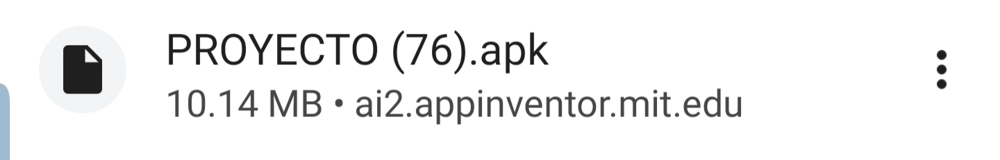
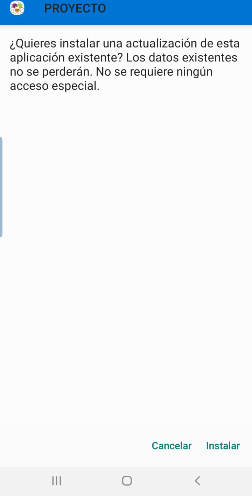
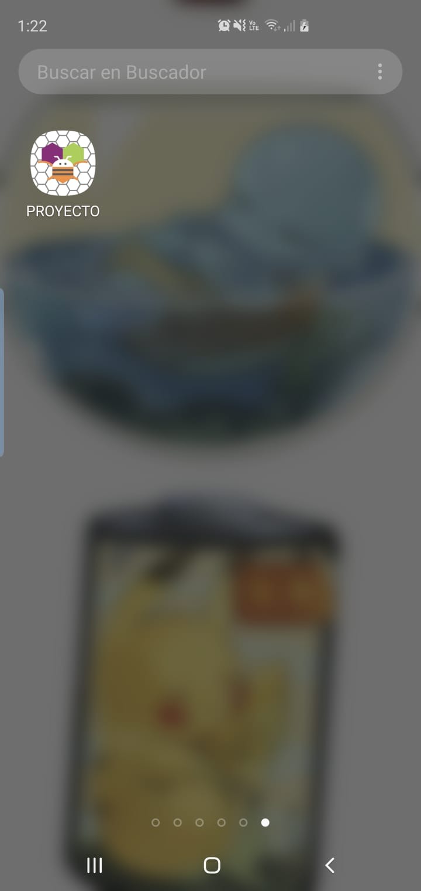
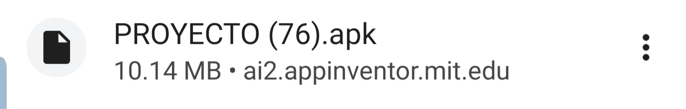
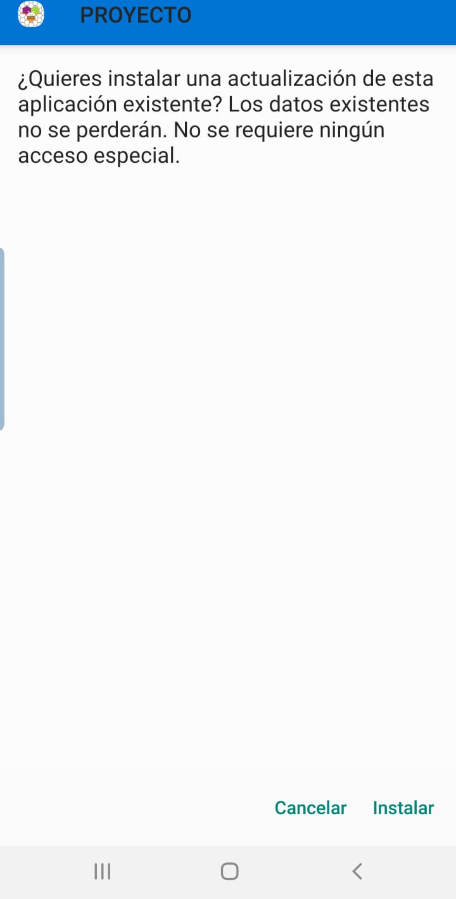
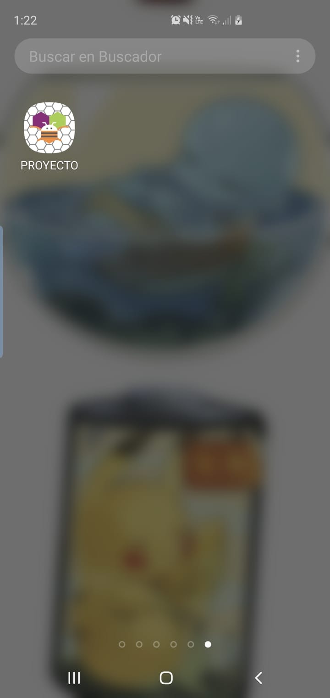

¿Como se instala en celular?
Primero escanee el codigo QR que aparece en la parte de instalación para celulares, una vez lo escanee lo va enviar a su navegador principal y se le empezara a instalar automaticamente:

Abra el archivo .apk y le abrira el instalador de su dispositivo movil y solo debera darle en instalar y esperar a que se instale:


Y listo ya abra instalado la app RAD en su dispositivo movil ya solo es cuestion de que la busque entre sus apps, y la abra como una aplicación más.


Abra el archivo .apk y le abrira el instalador de su dispositivo movil y solo debera darle en instalar y esperar a que se instale:

Y listo ya abra instalado la app RAD en su dispositivo movil ya solo es cuestion de que la busque entre sus apps, y la abra como una aplicación más.

En MACS o WINDOWS
En MACS o WINDOWS es más facil ya que aquí solo tendra que darle clic en el boton de instalar en el apartado de instlación de MACS o WINDOWS y se le descargara automaticamente un archivo apk
Datos para su uso
Recomendaciones que damos para el buen manejo de la aplicación es que la cierre siempre que no la use ya que la misma funciona como una aplicación mas y va desgastar su batería del teléfono o computadora si la tiene abierta y no está en uso, también mas adelante que le agreguemos mas funciones de ventanas emergentes tendrán que darle permiso a la aplicación de que podamos abrir estas mismas ventanas emergentes.